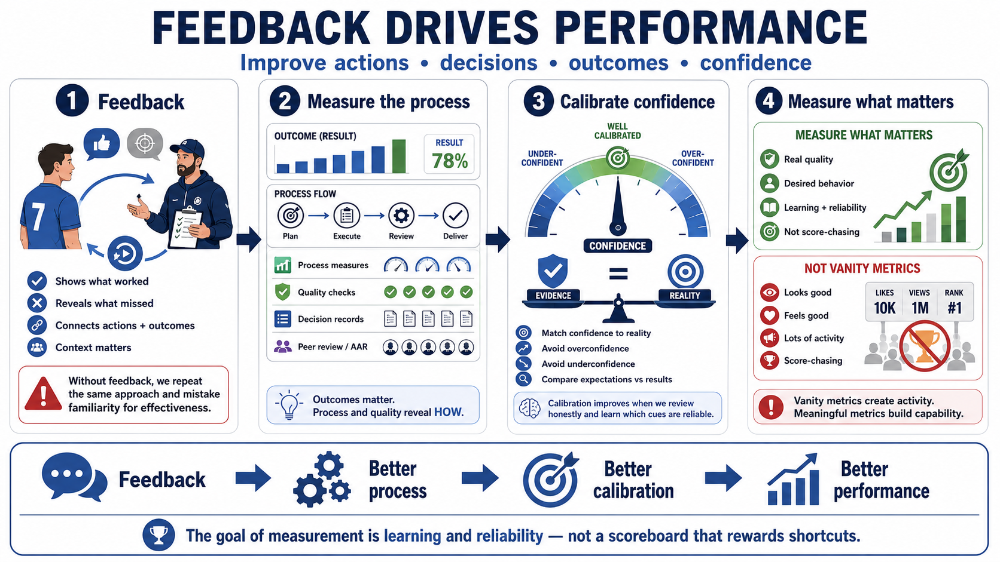

Feedback, Measurement, and Calibration
Connecting to LMS... Progress: in progress

Narration
Feedback is the foundation of performance improvement. Without feedback, performers may repeat the same approach and mistake familiarity for effectiveness. Useful feedback connects actions, decisions, outcomes, and context. It helps the performer understand what worked, what did not, and what needs to change before the next attempt.
Measurement should include more than final outcomes. Outcome measures matter, but they can hide whether the process was sound or merely lucky. Process measures, quality measures, decision records, peer review, and after-action reviews help show how the result was produced. They make it easier to improve the reasoning and behavior behind the outcome, not just celebrate or criticize the end state.
Calibration means matching confidence to actual performance, accuracy, or likelihood. Poor calibration can show up as overconfidence, where certainty exceeds evidence, or underconfidence, where useful skill is not trusted enough to act. Calibration improves when performers compare expectations with results, review decisions honestly, and learn which cues are reliable under which conditions.
The challenge is to measure what matters without turning performance into shallow score-chasing. Vanity metrics can create activity without capability. A strong measurement system asks whether the measure reflects real quality, whether it encourages the desired behavior, and whether it helps people improve. The purpose of measurement is learning and reliability, not a scoreboard that rewards shortcuts.